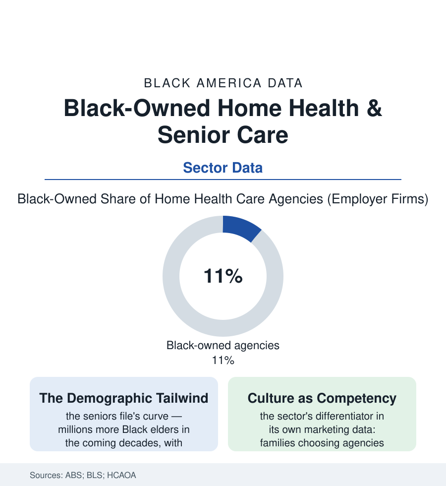

Black Business
Caring for Our Own, As a Business: Black-Owned Home Health and Senior Care
The generation that integrated America's workplaces is now aging at home — and Black-owned home-care agencies are building the industry that serves them. The senior care business file.

The business in this article begins with a demographic certainty from this atlas's census file: the Black senior population is the fastest-growing segment of Black America, and its members overwhelmingly intend to age in their own homes. Serving that intention is an industry — home health and personal care — and Black-owned agencies within it are scaling on a proposition no marketing department invented: that care is cultural, and families will pay for aides who know their people. This article reads the senior care business file.
The Industry's Three Floors
The sector's structure sorts by license and payer in the Medicare and industry data: the Medicare-certified home health agency (skilled nursing and therapy visits under physician orders — the heavily regulated tier, its certificate economics and audit exposure the trade literature's constant theme), the personal-care and home-care agency (the aides — bathing, meals, mobility, companionship — paid privately, by Medicaid waiver programs, by long-term-care insurance, and by the VA, the tier where most Black-owned firms in the survey counts operate), and the franchise tier (the national home-care brands' local offices — the franchise article's pattern repeating in care: the Black franchisee buying the brand, the referral network, and the training system, in a sector whose demand curve needs no persuading). The workforce economics are the sector's central tension, written across the domestic-care article's tables: the aide's wage at the labor market's floor against the agency's billed rate, the Medicaid programs' reimbursement setting both, the turnover data's churn (annual aide turnover in the industry reports running at two-thirds or higher — the continuity families buy and the wage structure cannot keep, the sector's quality problem priced into its labor model). The Black-owned agency's founders in the trade press accounts are disproportionately themselves former nurses and aides — the healthcare-workforce file's bench becoming owners — carrying the aide's knowledge into the office and, in the better-run firms' retention data, paying and scheduling against the industry's churn as the competitive act itself.
The adjacent shelves are filling in beside the agencies in the recent counts: the adult day programs (the church-hall model professionalized — the day center as the working daughter's infrastructure, several of the best-known Black-founded in the Southeast in the trade record), the hospice tier (the end-of-life file's underuse meeting the Black-founded hospice agency — trust again the product, the referral again the currency), and the care-technology fringe (the scheduling and family-communication platforms founded by the sector's own alumni in the startup data — the aide's daughter who built the app). The shelf's shape is the point: a full care economy, owned in layers, growing up around the elder at its center.
Why This Sector, Why Now
The growth rows assemble from every direction of the atlas: the payer expansion (Medicaid home-and-community-based waivers shifting long-term care's dollars from institutions to homes in the state data — the policy current at the sector's back for three decades), the hospital economics (discharge-to-home pressures making agencies the systems' partners, the referral relationships the sector's true currency in the trade data), the family file's arithmetic (the caregiving article's daughters and sons, employed and distant, purchasing the hours they cannot personally give — the agency as the kinship system's market extension, hired with a specificity the general market doesn't stock: the aide who cooks what mother eats, knows the hymns, does the hair, and calls the pastor by his title), and the wealth file's stake (the agency as the classic buildable, sellable local firm — recurring revenue, a licensable operation, an acquirer's roll-up market at the sector's top in the merger data, the senior-care firm as one of the few business-asset ladders the community's entrepreneurs can climb in a single generation). The honest frictions are in the file too: the reimbursement squeeze, the aide labor shortage the BLS projections make structural, the regulatory load's fixed costs falling hardest on the smallest firms — the survey's Black-owned counts growing in a sector whose economics punish the small, which is the business section's oldest sentence in a new uniform.
Reading the Senior Care Data
An industry built on the oldest obligation in the community's file — the care of its elders — becoming, at last, an owned industry: the senior care file is where this site's demographics pay their most human dividend. The census counts the agencies. The families count something else: whether the person who comes to the door knows the house's ways. The firms that can answer that are buying, with every contract, the trust the whole atlas is about.
More in Black Business
Black-Owned Businesses: Counts, Receipts, and the Representation Gap
About 161,000 Black-owned employer firms and three million solo ventures: how the Census Bureau counts Black business ownership, where firms concentrate, and the gap between population share and business share.
Black Median Net Worth: The Wealth Gap in Federal Reserve Data
The Federal Reserve puts Black median family net worth at $44,900, against $285,000 for White families — about 16 cents on the dollar. The widest gap in economic data.
Black Buying Power: The $1.8 Trillion Consumer Economy
Black buying power is estimated at about $1.8 trillion — larger than the economy of most nations. What the figure measures, who produces it, and what it buys.
Source: U.S. Census Bureau Annual Business Survey; U.S. Bureau of Labor Statistics home health industry data; Home Care Association of America industry reports; Medicare home health data.